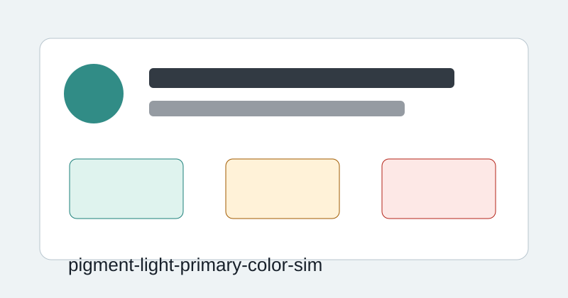

Game / v0.1.0-alpha.1
顔料と光の三原色シミュレーター
顔料を溶かした絵の具を混ぜる減法混色と、照明を重ねる加法混色を、流体、拡散、濃度、照射範囲の物理シミュレーションを使って学ぶ。課題モードでは指定色を顔料や光で再現し、混色過程、RGB/CMYK、補色、明度、彩度の違いを観察できる。

Ready
Game / v0.1.0-alpha.1
顔料を溶かした絵の具を混ぜる減法混色と、照明を重ねる加法混色を、流体、拡散、濃度、照射範囲の物理シミュレーションを使って学ぶ。課題モードでは指定色を顔料や光で再現し、混色過程、RGB/CMYK、補色、明度、彩度の違いを観察できる。
